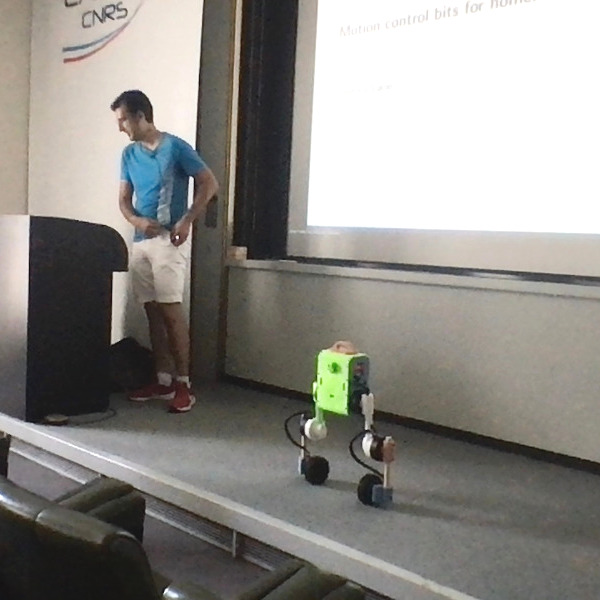

Abstract¶

Upkie prototype on stage, with a human commenting.
We have learned a lot from big expensive robots, but their weight and price are likely damping further progress. In this talk, we will follow an alternative made possible by recent innovations in actuators: light homemade robots, of the kind that can bump, fall on, or be lifted by us with no harm. By aiming for less actuators and lower complexity, we end up with morphologies that don't fit exactly the bill of previous ideas. This is a good start to revisit them! We will tour some examples from the open source software and hardware of Upkie, a wheeled biped robot that proudly stands on 3D printed parts and sawed broomsticks (among other mechanical marvels).
Content¶
| Slides | |
| Recording (42 min) | |
| Upkie wheeled biped robots | |
| James Bruton, great explorator of new morphologies |
Transcript¶
The following transcript was initially generated by:
vosk-transcriber -n vosk-model-en-us-0.22 -i audio.wav -o transcript.txt
Thank you everybody, I'm thrilled to be here. Thank you for your warm welcome and allowing me to speak today. This is going to be kind of an informal introduction. It should be really low level and chill, so I hope you enjoy, and don't hesitate to stop anytime if you have questions. [You can also join the discussion by posting a comment below.]
Today I would like to tell you about motion control, well motion control in particular because these are questions I'm very fond of, but also homemade robots in general, and what we can do with them.
Short bios are never short enough¶
So that [first slide]'s more for a quick background, as I've been working in teams on the following robots. Three years ago with HRP-4, we had a project of showing that you could take a humanoid inside an aircraft factory and that it could move around, locate itself, or do useful things like climbing stairs and crossing challenging parts in the environment. This was a research project, and after it was over I went to a company who was interested in pretty similar use cases. With quadrupeds, but similar use cases, and in terms of how we do motion control also, similar ideas from the state of the art that I assume you're already familiar with, like whole body control, torque control or position control, this kind of things.
It was also a great experience and I really liked ANYbotics as a company. After my time working with them I took some time off, did a whole bunch of things that we can talk about at a personal level, and one of them was a personal project which you see here [pointing to Upkie on stage] (which interestingly has started drifting to the side, usually [this controller] drifts more forward). This is Upkie, a wheeled biped made at home with whatever you can get your hands on through online retail, and learning a bunch of stuff, very basic, like 3D printing or [basic] electronics.
Before we talk about Upkie in particular, I would like to make a first point about morphology, or the morphology of robots, and how it has influenced the kind of techniques that we develop.
Blast from six years ago¶
If we look at basically six years ago (I'm a bit cheeky I'm showing you a Korean robot because I assume everybody here already knows the Japanese robots) we had basically two ways to do robots and implement locomotion on them. They were mostly bipeds and we would go either for position control with extra force sensing, or as famously shown by Boston Dynamics go for hydraulics and torque control. These choices were coupled at the time but there's not really a need for that, so if we look at joint control, I mentioned either position control or torque control, we want to look at the joints but also at what kind of sensing you have because it's always about control and observation.
Position versus torque control¶
With position controlled robots we would add force sensors, because we lost the backdrivability through the geartrains, and with torque controlled robots we could also sense joint torques, so [control and observation] were coupled and that was convenient. If you sense forces through joint torques you have a bit more work to do in state observation so, here [slide 3] it's heavier in terms of the theory, or in terms of the code you're going to implement, it's lighter if you have directly a force sensor because you can just start by trusting it and then move from there.
Whole-body impedance versus admittance control¶
And then about whole body control, so you know how you regulate all your tasks at the same time and your interactions with the environment, there is a very standard way of computing torques by solving an optimization problem, which I would say is whole-body impedance control, in the sense that you are sending directly forces and then you have position tasks to manage. Or you could do whole-body admittance control for position controlled robots where you're controlling your joints in position and you control forces only where you have a force sensor, so at the feet for big bipeds.
I don't know about you, but for me, six years ago our technology really looked like this, there were two avenues and [it felt like] either you go here or there. So it was a bit, let's say polarized.
Here come the wheels¶
Hopefully, I mean thankfully (I'm very fond of it), wheels came in! And again Boston Dynamics showed the way, but now we're starting to see increasingly more and more wheels, and I want to make the point that wheels are really fun in the sense that they don't fit exactly the bill of what we had been doing before, when we were saying "oh we have a force at the end effector, we want to control the force there, that's the story", because with wheels you're still going to get the same story but you'll start to see also [that] it's not the complete picture, you're not just controlling the force. Sometimes you're rolling your wheel because you want to control the position of your contact points, but [doing so is] also exerting a [ground tangential reaction] force on you, so there are a whole bunch of interesting things with wheels.
Exploring degrees of freedom¶
And not only wheels, but also in the number of degrees of freedoms of robots. Handle is kind of a big thing, you have the legs, you have the counterweight, you have an an arm on it. You could take a regular quadrupled and add wheels [to it], so then you get to sixteen degrees of freedom, a bit more complexity there, or you can go the other way around and try to trim the number of degrees of freedom to the minimum, and you get something like Ascento which has four degrees of freedom, controlled at least, and then you have this extra spring in the knee which brings you some extra behavior. So what I think is really cool about this is that we get to have new entries in this table, and actually it starts to look more like a technological tree where we are branching, and, you know, there are not just two ways but there are actually many ways we could explore.
New feature space coordinates¶
If you're interested [we can continue the comparison table], so here I added Ascento [to the table]: we still have torque control, and for sensing and you also sense joint torques and your usual IMU, but state observation is a bit of a middle-ground: it's not as simple as with, let's say, an HRP robot and just looking at the force sensors, there is a bit of dirty work, but it's also not as heavy as having a whole body state estimator with the whole [set of] equations of motions, all your constraints, etc. So it stands somewhere in between, and I think this is really cool, this is a sign that we can play with ideas and test them against new architectures, new morphologies.
Building our own¶
Okay, so that was a one point, new morphologies are coming. My second point today will be, well, they are coming because also we can build our own robots, and we can try stuff directly. This has become easier.
One big reason why this has become easier, it's not the only one but one big reason is about the availability of actuators. The market for us has become better recently: you don't have to go to a research lab anymore to build some handcrafted actuators, you can go to websites today and order actuators that are delivered to your door. That simplifies a whole lot of things, not only for people working from home but also for research in general, because it simplifies the process a lot. You don't have to get a quote, and perhaps approval from a [hierarchy] of people involved [on both sides], if you have access to a credit card, you can order directly.
Quasi direct drive actuators¶
There are two main kinds of actuators on the market today. First, Ben Katz's design which came with the Mini Cheetah, the quasi direct drive actuators. These are the ones that you can also see running on Upkie right now. They are commercially available [for instance from mjbots], which is really convenient. They have a torque range which is very decent, they can hold several Newton-metres continuously, and this particular actuator at I think it can hold for about five minutes, so you can have some decent motions; not too fast, you don't have to use just peak. Peak torque is about , so you could also get some impulsive motion out of it. And the price range roughly is around five hundred dollars, so that's, you know if you compare to the robots we worked with before, that cost at least 100 k's and more for each robot, this allows you to build robots that are significantly cheaper.
Series elastic actuators¶
Another line, which I haven't tried directly but I think it's also pretty cool and they are doing a good job, are series elastic actuators. They have been around for an even longer time, it was predating Ben Katz's designed by at least twenty years, but they are also commercially available, for instance from HEBI robotics. Series elastic means you just don't have your BLDC actuator and a geartrain, you also have a spring in there so you don't have to model torque through current, which involves several stages and some heavy modeling, you can just measure directly the torque through the spring [deformation] (also there is some modeling involved there as well). So it's a bit more complex [to build], but it also can scale up perhaps to higher torques. For this model that I show [in slide 6], continuous and peak torques are a bit higher. Unfortunately the price is also seven times higher, so it's kind of somewhere else on the spectrum. But, we have choice! Which again is really good to explore new ideas.
[Question from Nicolas Mansard and quick discussion about the torque range achieved by the joints of HRP-4 and HRP-2.]
mjbots stack¶
We can talk some more about the stack. So Upkie here is built with the mjbots stack, this is one of the companies out there that I think are—Disclaimer: I have used and enjoy their products—I think they are really great, it's a whole stack [including] the actuators, the electronics and the open source software. Software is open-source, the actuator design is [also] available online (it might use some non open-source software like Eagle for some electronics, I'm not sure about that), but the software you can fully delve into it.
Upkie¶
That leads us to this little guy, which you see here. I forgot to write its height, I think it's about eighty centimeters. It sports six joints, it has heavy legs with the knee joint in the middle. While you're not [witnessing] it right now it doesn't like carpet so much. It's mostly also to explore what you can do with the articulation of the legs, although [here it's] just balancing in place so you're not going to see much.
It has the ability to test both what you can do with being able to position your wheels some way in space, like in front of you, behind you [or] misaligned, and it has a wheels so you can also explore what's going on with balancing. Here we are on a flat surface, but for instance if you have some uneven surfaces, or some obstacles in front of you, [then the question is] how do you do the balancing while your wheel has to go up for instance, instead of being able to go forward/backward. So there are a couple of ideas that we can explore even with this simple form factor.
Upkie on slopes and stepping¶
[Question from Maximilien Naveau about locking the wheels.]
Once thing I have tested with Upkie is going up some slopes, up to like thirty degrees, and staying in place there. The wheels have enough torque to do that, the problem when you get on a slope is that, as the inclination increases, you burn more torque. Heat is the first limit you're going to hit with these actuators, so when the heat reaches a certain level, then it starts thermal throttling [to prevent actuator burnout], and then you're losing torque.
This design is extremely simple, when I [wrote] mechanical marvels in the abstract you get you get the humor of it 😉 This is a sawed broomstick, and if you look inside the wheels you're you're going to see an insane amount of extra material that's really not needed. So there is room for improvement, but no brakes [in the wheels], so if you want to step in place actually [you can use the motors only]. When the motors go into failure mode, they switch to pure damping and you can see that the legs can be pretty stiff. If the robot is [standing] in place and you lock the wheels, it will just fall right in place and you don't see much rolling, so I believe (I don't have data, I believe) that the torque will be enough [to step in place].
3D printing¶
Another great asset is 3D printing. You don't need a lot of training to be able to 3D print parts. I mean your mechanical design is going to suck, but you can start making it and seeing what you want to improve, and what you don't need to improve. A lot of these designs [just work], actually the [chassis] here [on Upkie] is a [chassis] of the mjbots quadruped. I just took it, printed it, and and it was like "OK, it's not going to be a quadruped [with hip abduction] like this, so we're just going to put [hip flexion instead]", and that was great. It's open source, in the sense of open hardware, "if I don't need to redo it, I just start using it" and gain some time. So that was pretty cool.
Cheaper uptime¶
I was surprised that the autonomy is also a pretty good. With this battery, it can for sure sustain the time we take talking together. According to the law of the blue screen of death, [this has become unlikely as soon as] I said it, but it can hold for hours on end, just standing. This is also great if we want to record some datasets for some other purposes, like offline reinforcement learning, or some other applications that you want to try. This is something new in my opinion, compared to the cost we had to pay every time we wanted to use an HRP robot which is a cost to set it up, calibrate it, etc. The engineering cost of just getting some uptime. Here, uptime is cheaper.
The price for this little thing, in terms of just the actuators and the electronics (so not including all the tiny details, the printing time or the the small components like cable sleeves or some stuff like this), the overall price would be around 2000-3000 euros. With a research-grade budget you can actually build many robots like this, so this is somewhere else on the spectrum compared to what we had been using before.
Electronics¶
This [slide 9] is just an overview of the electronic components inside, just to give you a hint that it's pretty simple. The actuators in themselves are integrated, you just need to [connect them] to a power bus, to feed all these little dudes, and then a CAN-FD bus to keep everybody connected. The onboard computer is a Raspberry Pi, it's not very powerful, it's also very cheap and has a bunch of things that help you, like also thermal throttling: if temperature gets too hot, your CPU will just slow down, and then your balancing will get more wobbly, and then you get a hints that "oh, maybe I need to put a fan on this beast". So here you [hear] a bit of a loud fan, but it's doing the job.
Then, on this Raspberry Pi you can plug the hat which is also some of the electronics that the company sells that gives you the [CAN-FD] ports to connect to your various motors. It also gives you an IMU with an on-board Kalman filter, so you don't need to take care of that because this is standard, [in] every group we assume we have orientation available. so that's also bundled with the beast, and there is a smaller power distribution board which, as I understand, is more about protecting the electronics from inrush currents that [happen] when you plug the battery to the rest of the circuit, and once everything is up and running it's just passing current through.
Takeaway points¶
There are only three points I would like to remember out of this lengthy discussion:
- The first one is that it has become easier for us to try new morphologies, and that's pretty cool, that's making it even better a time to be roboticist today.
- The second one, wondering about how we can improve on sharing hardware, not just open source software, and so for me the important part is: how do we make sure things are reproducible by the largest number of people possible?
- If there is one thing to remember about sharing software, making more libraries and focusing on what is the incremental buy-in of every piece of software that we ship in the hope that other people use. If you want to know if people are going to use it: what's the incremental buy-in?
Thanks a lot for your listening and questions, and I'll be looking forward to discussions.
Discussion ¶
You can subscribe to this Discussion's atom feed to stay tuned.
-
Maximilien Naveau
Posted on
Is it possible to lock the wheels on this robot?
-

Stéphane
Posted on
It's something we can try on this robot. There is no additional brake system on the wheels, here the actuator does all the braking; therefore, as long as it has enough torque to resist backdriving, we can make the wheel behave like a point foot.
Personally, I'm more excited about using the wheels in different ways. For instance, if you are facing the stairs, shall you lock the wheels and start climbing like a point-foot biped? Or can you keep the wheels in contact with the ground, but taking into account the slope variations of the terrain.
-
-
Nahuel Villa
Posted on
What is the maximum velocity of the knees? Is it fast enough for e.g. bipedal swinging?
-
Stéphane
Posted on
The hip and knee actuators are qdd100 beta 2 servos with maximum velocity = 2500 deg / s = 43.6 rad / s. We can do the math for a given swing profile but judging from the scale this part of the spec is not going to be the bottleneck for swing velocities. (More likely, the maximum torque coupled with the inertia of the lower leg into an acceleration limit will be more limiting.)
On a related note, the actuators of the wheels are mj5208 brushless motor. According to the spec, their maximum velocity is = 7500 rpm = 785 rad / s. Since the radius of these wheels is = 6 cm, the velocity constraint we get for the ground contact point from the actuator is 47 m / s. It is not the bottleneck for Upkie's forward velocity 😉
-
-
Nicolas Mansard
Posted on
Can the robot stand on one leg?
-
Stéphane
Posted on
Not for long! Upkie doesn't have direct control over the pitch of its floating base.
-
Nicolas Mansard
Posted on
But it has two legs so it can actually pitch around, right?
-
Stéphane
Posted on
That's correct, with two legs on the ground it can control the base pitch by differential flexing of its knees. Otherwise, it has time and legs, so it is also possible to control the pitch indirectly over time. But if it starts leaning to the side, beyond a certain point it has no way to come back, i.e. it gets out of the capturability region of the balancing task.
-
-
-
-
Philippe Souères
Posted on
Can this robot also turn around?
-
Stéphane
Posted on
Absolutely, by differential drive kinematics. One phenomenon to take into account when turning around is the increase in internal forces it causes to the closed kinematic chain including the two legs and the ground (in this particular controller there is even some gain scaling while turning to better resist these forces).
On Upkie today the wheels are 4WD RC car wheels (radius cm) that we can order from online retail. They are bigger and have more grip than the sleeker race RC car wheels. In turn, more grip means they produce more traction, thus (1) more internal forces on the legs, and (2) more disturbances while balancing back and forth, which requires some tuning of the balancing gains.
-
-

Attendee #3
Posted on
Can we extend this design into a quadruped?
-
Stéphane
Posted on
Interestingly Upkie's chassis is adapted from the quad A1 quadruped, whose 3D printed parts are available under the Apache 2.0 license. To turn it into a full quadruped we would need two more legs (of course) and an additional abduction-adduction joint on each leg. This would raise the actuator count to 16, which may not fit within the spec of the CAN-FD bus with the pi3hat; or perhaps you can, but you have to lower some other parameter like the bus frequency.
-
-
Nicolas Mansard
Posted on
In terms of hardware reproducibility, have you checked the Open Robot Actuator Hardware from ODRI? What's missing from there in your opinion that would improve reproducibility?
-
Stéphane
Posted on
Absolutely, this is actually one of the first options I considered when I started this project. One of the things that pushed me back in the design itself is that:
- Some steps required getting in touch with this or that company to get a quote, as opposed to ordering directly from a website.
- Some steps required expert knowledge that I didn't have at the time (so there was more risk in evaluating how much time and effort it would require), like disassembling a BLDC actuator to replace its stator.
-
Nicolas Mansard
Posted on
But don't you think they have already started laying out a good process for hardware reproducibility?
-
Stéphane
Posted on
I like the project very much and I think this repository is a great example. But following an example is not a process yet. A process would be: if you want to add a new robot to the collection, here is a template repository, here are the common first steps to follow, etc.
-
-
Nicolas Mansard
Posted on
One question that was not properly answered is that of licenses. What do you think are the propoer licenses to distribute parts or electrical designs?
-
Stéphane
Posted on
IANAL! It's still confusing today, for instance Printables only supports a limited number of licenses, some of which (GPLv3) are arguably not very good for part designs. Upkie's parts are under the CC BY 4.0 license, but some of its parts come from the mjbots quad A1 so they are distributed under the Apache 2.0 license. I'm not convinced the latter, or BSD licenses, are a good idea because from what I've read so far software licenses are not appropriate for hardware designs in general.
So far, CC BY(-SA) 4.0 seems like the best option to me (with or without the SA attribution clause depending on whether you want a permissive or copyleft license). But I don't have stronger arguments to support it and as of today this is the best answer I can come up with.
-
-
-

Attendee #4
Posted on
Why does the robot use broomsticks in its lower legs?
-
Stéphane
Posted on
In the beginning I was keen on using more wood, because wood has a nice low mass density. However, as time went by, I eventually came to realize that having cables lying around is not a good idea, so I reprinted the bones as hollow shapes to take care of cable routing as well. But then Upkie lost some ground on limb mass density.
-
Feel free to post a comment by e-mail using the form below. Your e-mail address will not be disclosed.